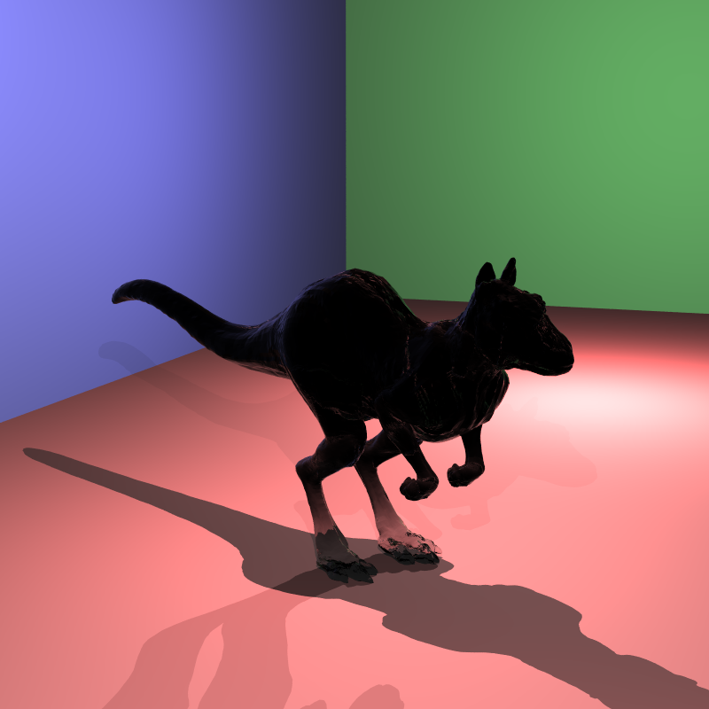
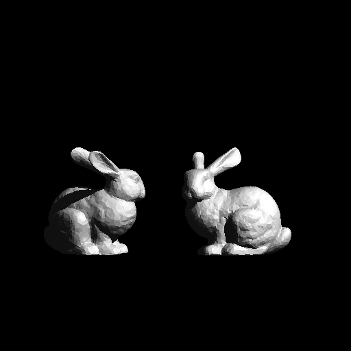

Raiden, Part III: Adding Movement
Posted onAfter a slight detour from our raytracer to research a bit about ray marching, we are back again. This time we will be adding transformations and instancing to Raiden. We will talk in a lot more detail in their dedicated chapters, but just to give a brief idea of what we are about to do for those who are unfamiliar with the terminology:
Transformations are pretty self-explanatory. We will be applying certain operations to our objects to “transform” them. We will cover translation, scaling and rotation. It is important to note that we will be doing these in such a way that we will not be modifying the object geometry. We will be achieving the transformations with the help of our good ol’ matrices. The benefits of not manipulating the object geometry directly may not be too obvious for now, but it will be useful once we start implementing instancing.
Instancing is method to save additional memory cost in the case where there exists duplicates of a single complex mesh in the scene. We call these duplicates, well… instances. I think it is safe to say that instancing is a space optimization. We will see how it works in its own section, but I think this explanation is enough for now to get going.
Transformations
If you were following closely, I mentioned that we will be making use of matrices to perform our transformations. But we don’t have any matrix implementation in our project yet. After thinking for a while, I thought implementing a reliable math library with full matrix and vector support was too much work and decided to integrate GLM into the project. GLM provides all the math stuff with a very similar interface to GLSL. Since it is designed with use in graphics work in mind, it has the common functionality we will need. With the integration of GLM, it was the time to say goodbye to tinymath. It was a small library we rolled on our own but served us well until this time. Actually, I had used GLM in my other side graphics projects which involved OpenGL stuff. I was familiar with its architecture and it was a pleasant experience to use, therefore I designed tinymath with an interface very similar to GLM. This resulted in a very smooth migration phase, which was mostly converting tmath::vec3f to glm::vec3 and it was good to go.
Now that we have our math library at our disposal, we can start to actually implement the transformation stuff. We hopefully need not worry about matrix calculations, GLM takes care of it with its convenient functions. There are only a few points we need to be careful about.
Let’s discuss how this all comes together. I mentioned that we will not be modifying the object geometry, so what are we going to do? We can represent all our transformations, that is rotation, scaling and translation, with a matrix. We call this matrix a transformation matrix. I will not go into too much detail regarding the math part, but we know that by the properties of matrices and a few clever tricks, we can combine these different kinds of transformations by multiplying their corresponding matrices, resulting in a single transformation matrix.
The actual question is: how do we use this matrix? I think it is obvious that we can simply modify our objects’ hit routines to apply this transformation. Let’s consider meshes: we could multiply our transformation matrix with all the vertices of our mesh, inside the hit function. And it would work. But we can do better. Let’s think for a second. Rather than transforming our objects, we can inverse transform the ray, and their relative positions and orientations will be the same. The upside is it would be a lot, a lot faster.
One thing we need to be careful about is the case of non-uniform scaling. We can scale our objects in a non-uniform fashion. For example, we can scale a sphere 2x its size, but only on x-axis. This would yield an ellipsoid. We do not have a hit routine for ellipsoids, but the god part is we don’t need it. We can use our usual sphere hit function, and transform the result. However, in order to get a correct result, we need to treat the surface normal vector differently. We basically need to multiply it with the inverse transpose of the transformation matrix, and it just works™.
The actual part we need to think thoroughly, is about BVH. If we do not transform the bounding boxes of our objects along with them, we are no good. I know that it is a bit hard to visualize, I know it is for me. But bear with me. While we are constructing the BVH, we are in the world space. Therefore we need to create the bounding boxes of the BVH as if we transformed our objects. However, once we hit a bounding box of the BVH, we move the local space of our object, therefore we don’t transform an objects internal bounding box, we just inverse transform the ray. I hope that makes sense. It took me a lot of thinking to grasp the idea, and I am still not totally sure I got it right 😄.
After we implement the corresponding parser stuff for our transformations, and put all these together, we can have the following outputs:
I rendered a few of the above with differing rotation angles to produce this animation:
I also rendered this scene of the so-called “killeroo”, however there seems to be problem with refractive surfaces under transformation. I have yet to solve the issue. However transformations are correct:

Instancing
In the intro paragraph I have talked a bit about what instancing is. As I said, instancing is a way to save memory for the cases where there exists multiples of the same mesh. What I mean by the same mesh is, only the same geometry. The instances will most probably have a different position, orientation and it may have different materials. These are all okay. After all, the costly part for us is the object geometry, memory-wise.
The idea is simple and intuitive. For our instances, we do not create a whole new mesh in the memory. Instead we define a MeshInstance class, which holds a pointer to the base mesh, and also has its own transformation matrix and material. In the hit function of our MeshInstance, we just call the hit function of the base mesh. During this process, we apply the transformation of the instance ofcourse. The same principles apply as explained in previous section. Another thing we may or may not want to have is to apply the transformation on top of the base mesh’s own transformation matrix, or just have it applied without the base one. This is specified in the input scene files as a resetTransform field. Depending on its value, we combine the two matrices.
This is all, really. To be honest I expected instancing would be a lot more work to implement. However, it was pretty easy compared to the transformation part. If you nail down the transformations and all the bounding box calculations together with it, implementing instancing will be a breeze.
I don’t have many scenes to show instancing. I constructed this one, where our bunny has a companion from now on:

The original bunny was first translated right, and scaled down. Then the instance of it was translated left and rotated around -axis. The original transform matrix was also applied to the instance (hence it is also scaled down).
This is it for this blog post. I hope it was informative. These topics are hard to grasp without a visual resource, it is hard to explain via text as well. The sad thing is I could not find a resource with an interactive demo or an animated video. If you happen to find one, I would like to take a look at it as well! As always, thanks for reading, and I wish you a great summer!